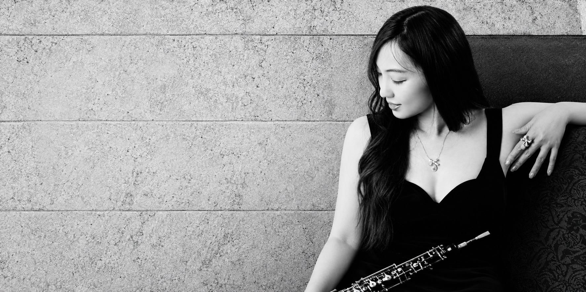
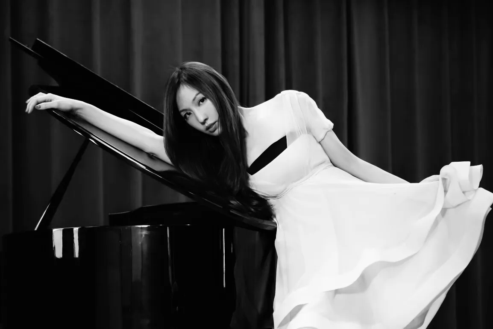

COVER STORY
台灣珠寶雜誌
第 122 期封面故事
音樂珠寶家 Bella 陳姿吟 ↗
在成為珠寶設計師之前，Bella 陳姿吟是一位雙簧管演奏家。她把伴隨半生的音符、琴鍵與提琴，化成可以戴在身上的作品。

她在音樂家庭長大，奶奶是鋼琴老師，童年的週末幾乎都在琴鍵前度過。一路讀到雙簧管演奏碩士，她站上舞台，也在音樂班任教，後來更自己寫歌、製作專輯。
珠寶是生命裡的另一段旋律。從擔任珠寶設計師嬸嬸的助理開始，她學著用眼睛「聽」寶石：火光像高音，色澤像和聲。
一顆讓她想起童年與母親的粉色珊瑚，被設計成南瓜馬車。承載記憶的作品，成為 Bella Couture 走向珠寶的起點。

從奶奶的鋼琴，開始對聲音與美的感受。
從舞台演奏到教學，讓音樂成為生命的日常。
從選石與設計開始，將記憶化為作品。
音樂珠寶品牌，在天母一館 1F 與你相遇。
第 122 期封面故事：音樂珠寶家 Bella 陳姿吟。
作詞、作曲、製作，以雙簧管寫下自己的旋律。
讓珠寶與音樂，站上同一個舞台。
第 122 期封面故事
音樂珠寶家 Bella 陳姿吟 ↗
奶奶的珠寶與傳承
Bella 分享收藏故事 ↗
小資本大創業
《黑白琴鍵》與品牌之路 ↗
新光三越天母一館 1F ｜ 台北市天母東路 68 號 ｜ 0958-331-689